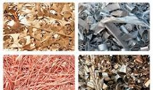

ALGUNOS DE LOS MATERIALES NO RECICLABLES
"Los materiales no reciclables son aquellos formados por sustancias difíciles de separar y cuyos beneficios del proceso de reciclaje no superan los costos. El gran volumen de eliminación de este tipo de residuos se ha convertido en un problema ambiental, dado el retraso en la descomposición y los efectos químicos y biológicos sobre el ecosistema. Para resolver este problema, es necesario reducir, reutilizar y, cuando ninguna de las dos opciones es posible, es imprescindible eliminación adecuada para reducir los impactos ambientales."